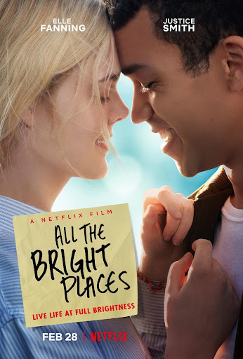

Violet and Finch
Jadde Citlali Hernández Ines
Rosario Pedraza Mondragón

Gender
Main character
Film director
Script
Synopsis
Description of the drama
Why did I decide to watch the film?
Why did you choose that scene?